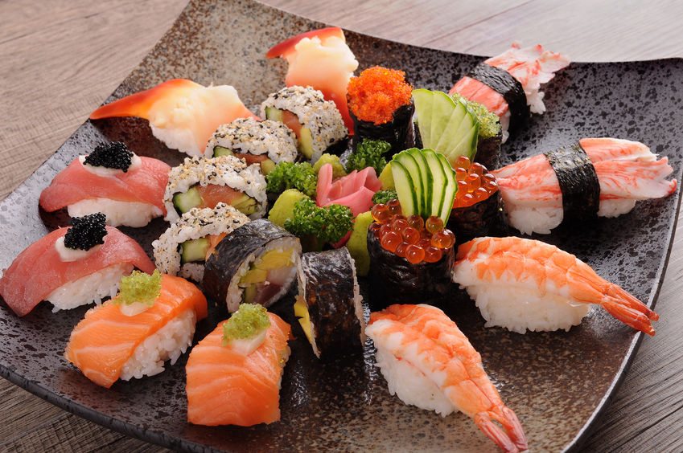

Sushi

What is sushi?
Sushi is a Japanese dish of prepared vinegared rice,
usually with some sugar and salt, accompanied by a variety of ingredients
such as seafood, often raw, and vegetables.
Ingredients you will need :
- 300g sushi rice
- 100ml rice wine vinegar
- 2 tbsp golden caster sugar
- 3 tbsp mayonnaise
- 1 tbsp rice wine vinegar
- 1 tsp soy sauce
- 25g bag nori (seaweed) sheets
- choose from the following fillings:
cucumber strips, smoked salmon, white crabmeat, canned tuna, red pepper, avocado, spring onion
Steps to make the sushi :
- Lay a nori sheet on the mat, shiny-side down.
Dip your hands in the vinegared water, then pat handfuls of rice on top in a 1cm thick layer, leaving the furthest edge from you clear.
- Use a spoon to spread out a thin layer of mayonnaise down the middle of the rice.
- Top the mayonnaise with a line of your favourite fillings.
- Lift the edge of the mat over the rice, applying a little pressure to keep everything in a tight roll.
- When you get to the edge without any rice, brush with a little water and continue to roll into a tight roll.